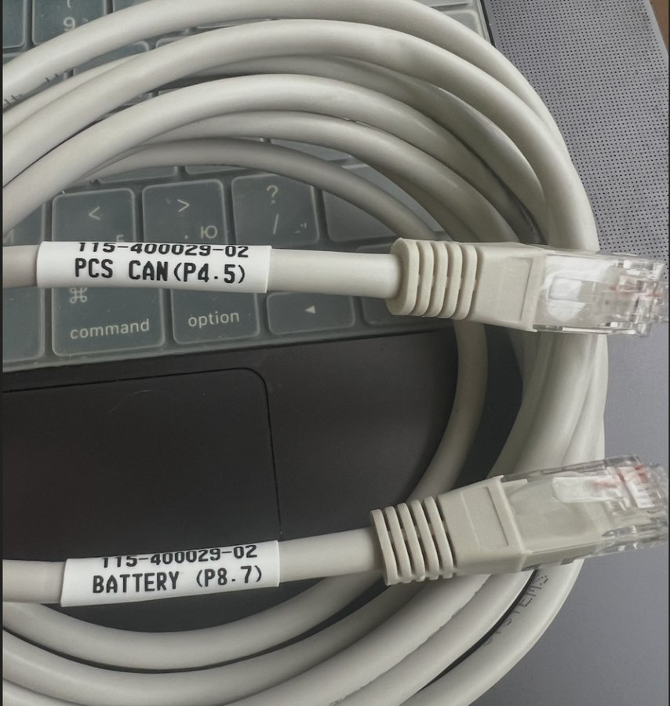
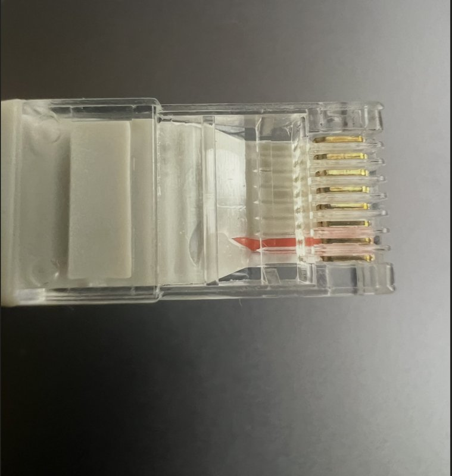
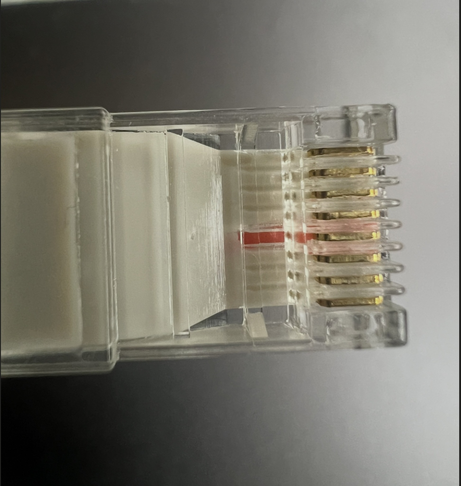
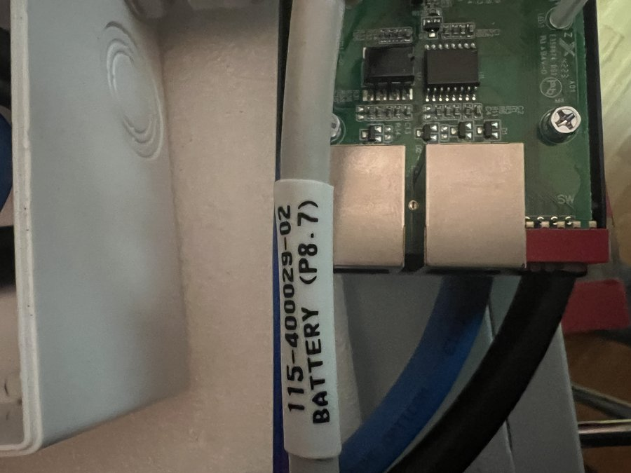
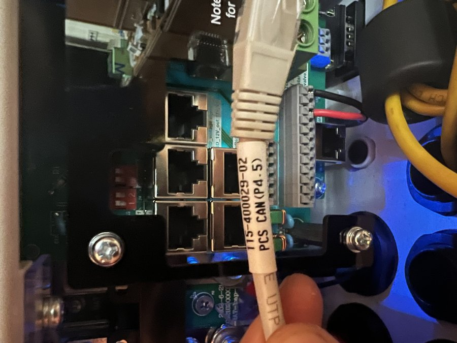
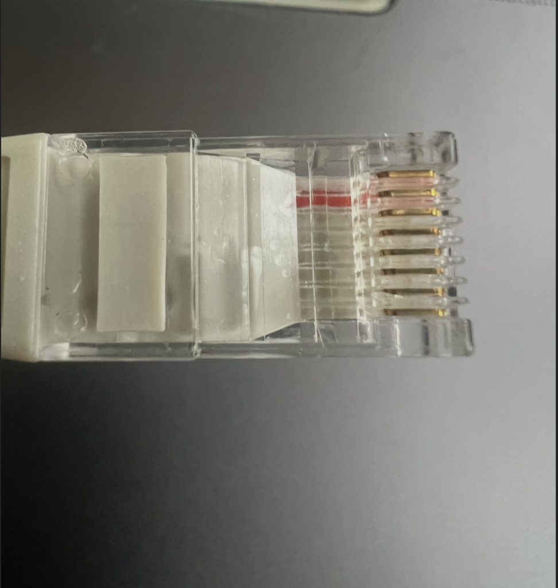
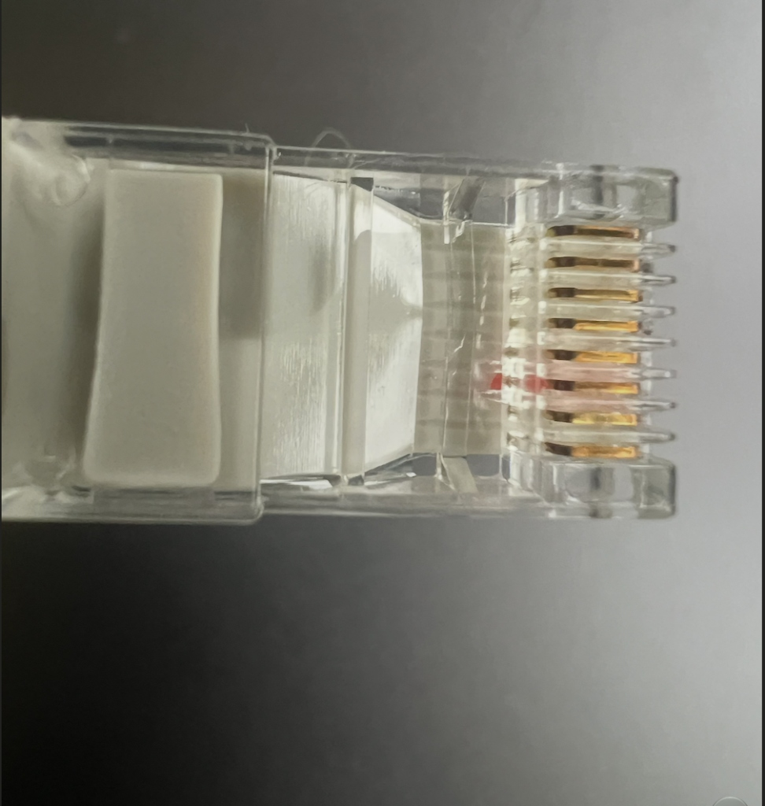
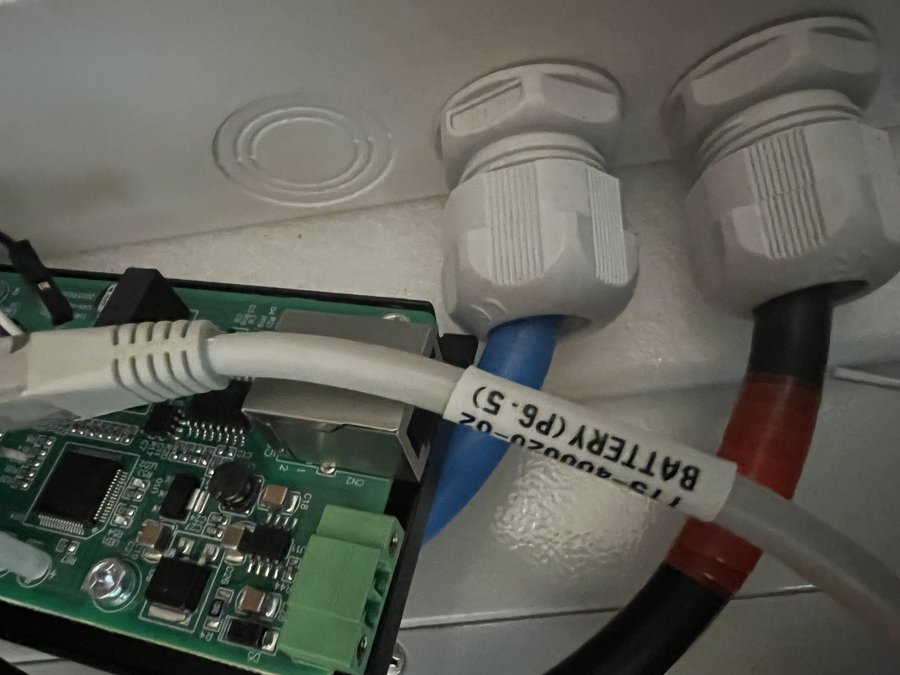

Інтелектуальний шлюз BMS RS485 (Vision 15S LiFePO4) → CAN (Deye Hybrid Inverter)
Призначення документа: Практична інструкція для монтажників, сервісних інженерів та власників енергосистем. Охоплює виготовлення кабелів, налаштування перемикачів, введення в експлуатацію, світлодіодну індикацію та щоденне обслуговування.
Зміст
- Огляд системи та призначення COM-Box
- Фізичні роз'єми, розпіновка та виготовлення кабелів
- Адресація та комутація акумуляторних блоків Vision
- Налаштування DIP-перемикачів на COM-Box
- Світлодіодна індикація (LED): Як читати стан коробки
- Налаштування гібридного інвертора Deye
- Режими експлуатації, безпека та авто-балансування
- Практичні рекомендації щодо вибору комбінацій DIP-перемикачів при графіках відключень
- Покроковий чек-лист першого запуску
- Пошук та усунення несправностей (Troubleshooting)
- Програмні інструменти діагностики та моніторингу (BMS Web Station v2.6)
- Як зберегти або експортувати цю інструкцію у PDF
- Додаток: Коротка шпаргалка для друку (стікер на корпус)
1.1. Яку проблему вирішує пристрій
Акумуляторні батареї Vision V-LFP48100 (15 послідовних елементів LiFePO4, номінальна напруга 48 В, ємність 100 А·год) оснащені внутрішньою платою керування (BMS), яка підтримує обмін даними за протоколом RS-485 (Modbus RTU).
Гібридні інвертори Deye (а також сумісні SunSynk) для точного керування зарядом та розрядом очікують високошвидкісну автомобільну шину CAN (протокол Pylontech CAN v2.0.6, 500 кбіт/с).
Без пристрою COM-Box інвертор змушений працювати з літієвими батареями в «сліпому» свинцево-кислотному режимі (по загальній напрузі), що призводить до:
* Передчасного вимкнення інвертора при розряді.
* Небезпеки перезаряду або перегріву окремих слабких комірок.
* Неможливості побачити справжній залишок заряду (SOC %) на екрані інвертора.
COM-Box є компактним інтелектуальним апаратним мостом-перекладачем, який розміщується між акумуляторним банком та інвертором.
┌────────────────────────────────┐ RS-485 (Modbus RTU) ┌──────────────┐ Крос-кабель CAN (500 kbps) ┌────────────────┐
│ Батарейний банк Vision 15S │ ────────────────────────────────── │ COM-Box │ ─────────────────────────────────── │ Інвертор Deye │
│ (від 1 до 16 блоків паралельно)│ Pin 1: GND, Pin 5: B-, Pin 6: A+ │ (GD32F305) │ COM-Box: Pin 1: GND, Pin 7: L, 8: H │ (Lithium 00) │
└────────────────────────────────┘ └──────────────┘ Deye: Pin 3: GND, Pin 5: L, 4: H └────────────────┘
│
Живлення 15..60 В DC
(від клем батареї)
- Постійне опитування всіх модулів: шлюз послідовно збирає телеметрію з кожного підключеного акумулятора (напруга кожної з 15 комірок, сумарний струм, 3 датчики температури NTC (комірок та силової плати), стан аварій).
- Інтелектуальна агрегація та 3-режимний адаптивний SOC:
- Впроваджено 3-режимну модель розрахунку відсотка заряду, яка компенсує електрохімічний гістерезис LiFePO4: зарядна таблиця під струмом (50.5 В відповідає чесним 65–66%), розрядна під навантаженням та таблиця спокою.
- Smart Coulomb Fallback: шлюз зчитує лічильник самої BMS (регістр 24); якщо він активний — транслює його, а при зависанні на 100% (при V < 53.0 В) автоматично перемикається на адаптивну модель.
- Tail Current Anchor: статус 100% активується лише при V >= 53.5 В, комірці >= 3.55 В та спаді струму < 1.0 А.
- Захист кожної окремої комірки:
- При наближенні найсильнішої комірки до 3.45…3.60 В струм заряду плавно дротелюється аж до повного зупинення, запобігаючи аварійному відключенню BMS.
- При зниженні найслабшої комірки до 2.90 В струм розряду обмежується на 50% (Soft Warning), а при 2.75 В — розряд повністю блокується (Soft Cut-off із запасом 250 мВ до апаратного вимкнення BMS 2.50 В, що рятує ключі від дугового розриву під навантаженням).
- Температурний нагляд та надійний зимовий захист (< +2 °C):
- Якщо температура в акумуляторах опускається нижче +2 °C, заряд негайно блокується для запобігання незворотній металізації та деградації літію.
- Для інверторів Deye в режимі Off-Grid (які можуть ігнорувати ліміт струму CCL=0) шлюз примусово передає статус SOC = 100%, що гарантує негайне розмикання зарядних ключів інвертора. Захист розряду залишається повністю функціональним (до -20 °C).
- Автономне вирівнювання (балансування) із захистом від Standby: шлюз самостійно визначає дисбаланс комірок і проводить делікатні сесії вирівнювання. При досягненні 3.56 В активується режим Float Hold (52.5 В, 5.0 А на блок), а інвертор утримується активним за протоколом Pylontech (прапорці 0x35C 0x88, SOC ≤ 98%), дозволяючи резисторам BMS ефективно усунути розкид без передчасного вимкнення інвертора.
- Абсолютна безпека зв'язку (Fail-Closed): у разі обриву кабелю зв'язку з батареями COM-Box через 8 секунд передає на інвертор команду негайного зупинення заряду та розряду (0 А).
1.3. Комплект поставки (Заводська комплектація)
Згідно з оригінальним керівництвом виробника та фактичною комплектацією коробки, до комплекту входять:
1. BMS COM BOX — шлюз-конвертер у металевому корпусі з вушками для кріплення на стіну.
2. Комплектний кабель зв'язку CAN — спеціальний заводський крос-кабель для підключення до інвертора Deye з маркуванням BATTERY (P8.7) ──► PCS CAN (P4.5).
3. Комплектний кабель зв'язку RS-485 — спеціальний заводський крос-кабель для інверторів із протоколом RS-485 з маркуванням BATTERY (P6.5) ──► PCS RS485 (P2.1).
4. Power Line — кабель живлення постійного струму з клемними наконечниками під гвинтовий затискач B+/B-.
5. User Guide — паспорт / інструкція з експлуатації.
ℹ️ Для з'єднання COM-Box з акумуляторами Vision V-LFP48100 використовується стандартний прямий мережевий патч-корд RJ45 (T568B).
2. Фізичні роз'єми, розпіновка та виготовлення кабелів
Конструктивно роз'єми шлюзу COM-Box рознесені на дві протилежні торцеві панелі:
┌────────────────────────────────────────────────────────┐
│ ВЕРХНЯ КРИШКА │
│ │
│ [LED 1] [LED 2] [LED 3] [LED 4] │
│ PCS-485 PCS-CAN BMS-485 Running │
│ Connect Connect Connect │
┌──────────┴────────────────────────────────────────────────────────┴──────────┐
│ ТОРЕЦЬ А (До інвертора / ПК): │ ТОРЕЦЬ B (До батареї та живлення):│
│ │ │
│ [ PCS-CAN ] [ PCS-485 ] │ [ BMS-485 ] [ B- ] [ B+ ] │
│ (CAN 500K) (RS485 9600) │ (RS485 9600) Живлення 15..60V │
│ Гніздо RJ45 Гніздо RJ45 │ Гніздо RJ45 │
│ (Поз. 5) (Поз. 6) │ (Поз. 9) [1 2 3 4 5] SW │
│ │ DIP-перемикачі │
└───────────────────────────────────────┴────────────────────────────────────┘
1. Порт BMS-485 (Поз. 9, Торець B — зв'язок з батареєю, 9600 бод):
| Пін RJ45 |
Заводське маркування |
Призначення |
Опис |
| 1 |
GND |
Сигнальне / силове заземлення |
Спільний сигнальний мінус ⚠️ (Обов'язковий!) |
| 2..4 |
CN |
Connect None |
Вільні (не підключені) |
| 5 |
BMS-485B |
Лінія даних RS-485 B (-) |
Інверсний сигнал Modbus RTU |
| 6 |
BMS-485A |
Лінія даних RS-485 A (+) |
Прямий сигнал Modbus RTU |
| 7..8 |
CN |
Connect None |
Вільні (не підключені) |
2. Порт PCS-485 (Поз. 6, Торець A — зв'язок із зовнішніми пристроями / ПК, 9600 бод):
| Пін RJ45 |
Заводське маркування |
Призначення |
Опис |
| 1 |
GND |
Сигнальне / силове заземлення |
Спільний сигнальний мінус ⚠️ |
| 2..4 |
CN |
Connect None |
Вільні (не підключені) |
| 5 |
BMS-485B |
Лінія даних RS-485 B (-) |
Діагностичне дзеркало (DIP2=OFF) / Міст (DIP2=ON) |
| 6 |
BMS-485A |
Лінія даних RS-485 A (+) |
Діагностичне дзеркало (DIP2=OFF) / Міст (DIP2=ON) |
| 7..8 |
CN |
Connect None |
Вільні (не підключені) |
3. Порт PCS-CAN (Поз. 5, Торець A — зв'язок з інвертором, CAN 500 кбіт/с):
| Пін RJ45 |
Заводське маркування |
Призначення |
Опис |
| 1 |
GND |
Сигнальне / силове заземлення |
Спільний сигнальний мінус ⚠️ (Обов'язковий!) |
| 2..6 |
CN |
Connect None |
Вільні (не підключені) |
| 7 |
CANL |
Лінія даних CAN-L |
Диференційний сигнал низького рівня |
| 8 |
CANH |
Лінія даних CAN-H |
Диференційний сигнал високого рівня |
2.2. Офіційна специфікація та апаратна топологія плати порту BMS інвертора Deye
Згідно з офіційним керівництвом з експлуатації та схемотехнічною топологією друкованої плати (PCB роз'єму J1) інверторів Deye, роз'єм BMS (RJ45) містить дві незалежні шини:
| Контакт роз'єму BMS Deye |
Офіційне маркування Deye |
Призначення |
Топологія друкованої плати інвертора Deye |
| Pin 1 |
BMS-485_B |
Шина RS-485 (B) |
⚠️ З'єднаний прямою мідною доріжкою на платі з Pin 8! |
| Pin 2 |
BMS-485_A |
Шина RS-485 (A) |
⚠️ З'єднаний прямою мідною доріжкою на платі з Pin 7! (НЕ земля!) |
| Pin 3 |
BMS-GND_485 |
Сигнальна земля |
Справжня сигнальна земля GND (з'єднана доріжкою з Pin 6) |
| Pin 4 |
CAN-H |
Шина CAN (High) |
Прямий вхід CAN-трансивера Deye (окрема диференційна пара) |
| Pin 5 |
CAN-L |
Шина CAN (Low) |
Прямий вхід CAN-трансивера Deye (окрема диференційна пара) |
| Pin 6 |
BMS-GND_485 |
Сигнальна земля |
Резервна сигнальна земля GND (з'єднана доріжкою з Pin 3) |
| Pin 7 |
BMS-485_A |
Шина RS-485 (A) |
⚠️ Запаралелений на платі з Pin 2 (шина RS-485, НЕ CAN!) |
| Pin 8 |
BMS-485_B |
Шина RS-485 (B) |
⚠️ Запаралелений на платі з Pin 1 (шина RS-485, НЕ CAN!) |
⚠️ КАТАСТРОФІЧНІ НАСЛІДКИ ПІДКЛЮЧЕННЯ ПРЯМОГО ПАТЧ-КОРДУ 1-В-1
Погляньте на те, що фізично відбувається на доріжках плати Deye при спробі вставити стандартний прямий кабель:
1. На роз'ємі COM-Box (PCS-CAN): Pin 1 = GND, Pin 7 = CAN-L, Pin 8 = CAN-H.
2. При прямому кабелі Pin 8 COM-Box (CAN-H) потрапляє на Pin 8 Deye (BMS-485_B).
3. Одночасно Pin 1 COM-Box (GND) потрапляє на Pin 1 Deye (BMS-485_B).
4. Оскільки Pin 1 та Pin 8 на платі Deye замкнені спільною червоною мідною доріжкою — вихід CAN-H коробки наглухо замикається накоротко на землю GND через плату інвертора!
5. Вихід CAN-L (Pin 7) коробки сідає на лінію RS485_A (Pin 7/2) інвертора.
6. Справжні входи CAN інвертора Deye (Pin 4 CAN-H та Pin 5 CAN-L) залишаються абсолютно порожніми!
У результаті інвертор Deye не отримує жодного байта і миттєво сигналізує аварію F20 BMS Comm Fault, а вихідний каскад CAN-трансивера перебуває в режимі короткого замикання.
Висновок: Прямий кабель між COM-Box та Deye суворо заборонений! Використовується виключно спеціальний крос-кабель!
2.3. Комплектні заводські кабелі та схеми підключення
У коробці COM-Box у комплекті постачаються два спеціальні заводські інтерфейсні кабелі з індивідуальним маркуванням на білих термозбіжних трубках:
1. Кабель CAN (500 кбіт/с) — для зв'язку між COM-Box та інвертором Deye.
2. Кабель RS-485 (9600 бод) — для опитування акумуляторів Vision V-LFP48100 коробкою COM-Box.
⚠️ КРИТИЧНО ВАЖЛИВЕ ПРАВИЛО: НЕ ЗВЕРТАЙТЕ УВАГУ НА НАПИСИ «BATTERY» ЧИ «PCS»!
Заводські текстові назви («BATTERY», «PCS CAN», «PCS RS485») надруковані виробником для внутрішніх систем і можуть ввести в оману.
Орієнтуйтеся ВИКЛЮЧНО на номери пінів у дужках: (P8.7), (P4.5), (P6.5), (P2.1)!
Ці кабелі працюють тільки тоді, коли кожна сторона ввімкнена у свій відповідний роз'єм правильним кінцем.
Це спеціальний готовий кабель для передачі телеметрії та лімітів за протоколом Pylontech CAN (500 кбіт/с) між портом PCS-CAN коробки COM-Box та портом BMS інвертора Deye:
| Загальний вигляд кабелю CAN |
Штекер COM-Box (P8.7) |
Штекер Deye (P4.5) |
 |
 |
 |
Маркування: P8.7 ↔ P4.5 |
Розшито піни 8 та 7 |
Розшито піни 4 та 5 |
Фактичне підключення на живому об'єкті:
Штекер (P8.7) увімкнено в COM-Box (PCS-CAN) |
Штекер (P4.5) увімкнено в інвертор Deye (BMS) |
 |
 |
➡️ Порт PCS-CAN (COM-Box) |
➡️ Порт BMS (Інвертор Deye) |
Таблиця та правила підключення кабелю CAN:
| Бірка на кабелі |
Розшиті піни |
Куди ПІДКЛЮЧАТИ |
Сигнали та призначення |
BATTERY (P8.7) |
Pin 8, Pin 7 |
➡️ COM-Box (порт PCS-CAN) |
Pin 8 = CAN-H, Pin 7 = CAN-L коробки COM-Box |
PCS CAN (P4.5) |
Pin 4, Pin 5 |
➡️ Інвертор Deye (порт BMS) |
Pin 4 = CAN-H, Pin 5 = CAN-L інвертора Deye |
- Чому це працює: Кабель забезпечує прямий зв'язок CAN-H (8 ──► 4) та CAN-L (7 ──► 5).
- Увага: Не вмикайте кінець
BATTERY (P8.7) в акумулятор Vision! У Vision на пінах 7 і 8 CAN відсутній.
- Якщо переплутати сторони місцями: COM-Box не отримає сигналу на пінах 8/7, а Deye отримає сигнал на пінах RS-485 замість CAN. Інвертор видасть помилку
F20 BMS Comm Fault.
Це штатний комплектний кабель для опитування акумуляторів Vision V-LFP48100 по шині RS-485 (Modbus RTU, 9600 бод):
| Загальний вигляд кабелю RS-485 |
Штекер COM-Box (P6.5) |
Штекер Батареї (P2.1) |
 |
 |
 |
Маркування: P6.5 ↔ P2.1 |
Розшито піни 6 та 5 |
Розшито піни 2 та 1 |
Фактичне підключення на живому об'єкті:
Штекер (P6.5) увімкнено в COM-Box (BMS-485) |
Штекер (P2.1) увімкнено в батарею Vision (RS485) |
 |
 |
➡️ Порт BMS-485 (COM-Box) |
➡️ Порт RS485 (Акумулятор Vision) |
Таблиця та правила підключення кабелю RS-485:
| Бірка на кабелі |
Розшиті піни |
Куди ПІДКЛЮЧАТИ |
Сигнали та призначення |
BATTERY (P6.5) |
Pin 6, Pin 5 |
➡️ COM-Box (порт BMS-485) |
Pin 6 = RS485-A (+), Pin 5 = RS485-B (-) |
PCS RS485 (P2.1) |
Pin 2, Pin 1 |
➡️ Акумулятор Vision (порт RS485) |
Pin 2 = RS485-A (+), Pin 1 = RS485-B (-) |
- Чому це працює: У роз'ємі коробки
BMS-485 лінії опитування виведені на піни 6 (A+) та 5 (B-), а на лицьовій панелі акумулятора Vision роз'єм RS485 приймає сигнал на пінах 2 (A+) та 1 (B-). Кабель ідеально транслює диференційну пару: Pin 6 (A) ──► Pin 2 (A), Pin 5 (B) ──► Pin 1 (B).
- Якщо переплутати сторони місцями: Обміну даними не буде, і світлодіод
BMS-485 Connect на кришці коробки не спалахуватиме.
🔌 З'єднання між самими акумуляторами Vision (Міжблочний ланцюжок)
Для послідовного з'єднання кількох акумуляторних блоків Vision V-LFP48100 між собою (від блоку №1 до №2, від №2 до №3 тощо) використовується звичайний прямий комп'ютерний патч-корд RJ45 (1-в-1 T568B) із вільного другого гнізда RS485 першого блоку в гніздо RS485 наступного.
2.4. Підключення живлення (Клеми B+ / B-)
- Живлення COM-Box здійснюється постійною напругою в діапазоні від 15 В до 60 В DC.
- Живлення подається безпосередньо з шини акумуляторного банку 48 В.
- Полярність клем:
- B+ — підключається до плюсової шини акумулятора (+48 В).
- B- — підключається до мінусової шини акумулятора (GND / 0 В).
- Внутрішній імпульсний перетворювач захищений від перевантажень, споживання пристрою становить менше 0.5 Вт.
3. Адресація та комутація акумуляторних блоків Vision
Акумулятори Vision V-LFP48100 підтримують паралельне з'єднання до 16 блоків. Для опитування кожен блок повинен мати свою унікальну адресу Modbus на перемикачах ID (DIP) на лицьовій панелі акумулятора.
На лицьовій панелі батареї розташований червоний перемикач на 4 позиції з написом ID та два спарених порти RS485.
⚠️ КРИТИЧНО ВАЖЛИВО: НАПРЯМОК ВІДЛІКУ БІТІВ (СПРАВА НАЛІВО)!
На корпусі самого перемикача цифри 1 2 3 4 нанесені зліва направо, але вага розрядів адреси йде СПРАВА НАЛІВО:
* DIP 4 (крайній справа): Молодший біт (LSB, вага 1). Важіль ВГОРУ (ON) = +1.
* DIP 3 (другий справа): Біт 1 (вага 2). Важіль ВГОРУ (ON) = +2.
* DIP 2 (другий зліва): Біт 2 (вага 4). Важіль ВГОРУ (ON) = +4.
* DIP 1 (крайній зліва): Старший біт (MSB, вага 8). Важіль ВГОРУ (ON) = +8.
* Важіль ВГОРУ = ON (увімкнено), важіль ВНИЗ = OFF (вимкнено).
┌────────────────────────┐
│ Блок 1 (Master) │ ID: [Вниз, Вниз, Вниз, ВГОРУ] ──► Адреса 0x01
│ [RS485] [RS485] │ (крайній справа важіль DIP 4 піднято вгору)
└──────┬────────────┬────┘
│ │ Прямий патч-корд RS485 (міжблочний)
│ ▼
Кабель │ ┌────────────────────────┐
BMS-485 │ │ Блок 2 (Slave 1) │ ID: [Вниз, Вниз, ВГОРУ, Вниз] ──► Адреса 0x02
до │ │ [RS485] [RS485] │ (другий справа важіль DIP 3 піднято вгору)
COM-Box │ └────────────────┬───────┘
│ │ Прямий патч-корд RS485
▼ ▼
[COM-Box] ┌────────────────────────┐
│ Блок 3 (Slave 2) │ ID: [Вниз, Вниз, ВГОРУ, ВГОРУ] ──► Адреса 0x03
│ [RS485] [RS485] │ (DIP 3 та DIP 4 вгору — ЯК НА ФОТО БАТАРЕЇ!)
└────────────────┬───────┘
│
▼ ... До 16 блоків
Таблиця адрес акумуляторних блоків (Перемикачі ID на батареї)
| Номер блоку |
Адреса Modbus |
Положення важелів [DIP 1..4] |
DIP 1 (зліва, вага 8) |
DIP 2 (вага 4) |
DIP 3 (другий справа, вага 2) |
DIP 4 (крайній справа, вага 1) |
Роль у системі |
| Блок 1 |
0x01 |
[ Вниз, Вниз, Вниз, ВГОРУ ] |
OFF |
OFF |
OFF |
ON |
Головний (Master) — сюди вмикається кабель від COM-Box |
| Блок 2 |
0x02 |
[ Вниз, Вниз, ВГОРУ, Вниз ] |
OFF |
OFF |
ON |
OFF |
Підлеглий (Slave 1) |
| Блок 3 |
0x03 |
[ Вниз, Вниз, ВГОРУ, ВГОРУ ] |
OFF |
OFF |
ON |
ON |
Підлеглий (Slave 2) (налаштування як на фото) |
| Блок 4 |
0x04 |
[ Вниз, ВГОРУ, Вниз, Вниз ] |
OFF |
ON |
OFF |
OFF |
Підлеглий (Slave 3) |
| Блок 5 |
0x05 |
[ Вниз, ВГОРУ, Вниз, ВГОРУ ] |
OFF |
ON |
OFF |
ON |
Підлеглий (Slave 4) |
| Блок 6 |
0x06 |
[ Вниз, ВГОРУ, ВГОРУ, Вниз ] |
OFF |
ON |
ON |
OFF |
Підлеглий (Slave 5) |
| Блок 7 |
0x07 |
[ Вниз, ВГОРУ, ВГОРУ, ВГОРУ ] |
OFF |
ON |
ON |
ON |
Підлеглий (Slave 6) |
| Блок 8 |
0x08 |
[ ВГОРУ, Вниз, Вниз, Вниз ] |
ON |
OFF |
OFF |
OFF |
Підлеглий (Slave 7) |
| ... |
... |
... |
... |
... |
... |
... |
До 16 модулів включно |
Правило комутації: Кабель BMS-485 від COM-Box вставляється в будь-яке з двох паралельних гнізд з написом RS485 головного блоку (Адреса 0x01, крайній справа DIP 4 вгору). Між собою блоки з'єднуються стандартними прямими патч-кордами RJ45 із сусіднього вільного роз'єму RS485 попереднього блоку в роз'єм RS485 наступного за ланцюжковою топологією.
⚠️ Два різні «майстри» — не плутати (уточнення 22.10.2026):
* «Головний блок» (Master) у цьому посібнику = блок з адресою 0x01, у якого підключений кабель від COM-Box. Це лише фізична точка підключення — на дані в шині роль не впливає.
* «Master BMS» у таблиці виробника Vision = адреса 0x10 (16) — стан, коли усі 4 важелі ID опущені ВНИЗ (0+0+0+0 = 0, BMS додає 0x10). Це інший, виробничий, термін.
* Усі 4 важелі ВГОРУ = ID 15 = 0x0F (живо перевірено 21.10.2026: АКБ на 0x0F відповідає, med ≈ 101 мс, 0 помилок).
* Слова ON/OFF у таблиці DIP виробника інвертовані за фізичними важелями: приклад №2 «ON ON OFF ON» фізично = [ Вниз, Вниз, ВГОРУ, Вниз ] = 0x02.
* Відповідають адреси 0x01–0x0F; на 0x10 у живому ланцюзі (21–22.10) АКБ не відповідали — в АКБ не було конфігурації «усі ВНИЗ». Деталі: DEYE_CAN_RS485_BASE.md, розділ «Додано 22.10.2026».
На бічній/лицьовій грані COM-Box розташований блок із 5 мікроперемикачів (DIP-перемикачі). Вони дозволяють налаштовувати ключові параметри системи без підключення комп'ютера.
Перемикачі опитуються мікроконтролером постійно (кожні 250 мс). Змінювати положення можна «на гарячу», без зняття живлення.
┌──────────────────────────┐
│ ON │
│ ┌───┬───┬───┬───┬───┐ │
│ │ │ │ │ │ │ │
│ └───┴───┴───┴───┴───┘ │
│ 1 2 3 4 5 │
│ OFF (за замовчуванням) │
└──────────────────────────┘
Таблиця конфігурації перемикачів
| Перемикач |
Функція |
Стан OFF (Вимкнено, важіль униз) |
Стан ON (Увімкнено, важіль угору) |
Рекомендоване положення |
| DIP 1 |
Цільова напруга заряду (Профіль) |
100% заряду (54.0 В)
Стандартний режим (типово) |
90% заряду (51.8 В)
Ощадливий режим, тривалий ресурс LiFePO4 з адаптивним авто-балансуванням (Float Hold 52.5 В) |
OFF (або ON для 90%) |
| DIP 2 |
Режим діагностичного порту PCS-485 |
Пасивне дзеркало
Трансляція даних батареї для ПК/моніторингу |
Прозорий міст
⚠️ Лабораторний режим досліджень |
OFF (Суворо OFF!) |
| DIP 3 |
Режим опитування батарей (Polling Mode) |
Розумний Plug & Play автопошук
⚡ Швидкісне опитування лише активних АКБ (800 мс для 2 блоків, старт за 1.2 с) |
Сервісний оверрайд (Force Full Scan)
⚠️ Примусове повне сканування всіх 16 адрес (цикл ~6.4 с) |
OFF (типово, рекомендовано) |
| DIP 4 |
Режим обмеження струму заряду |
50 А на блок (Стандарт)
(Повний паспортний струм заряду Vision) |
15 А на блок (Ощадливий режим 0.15C)
(Зниження нагріву проводки в 11 разів, тиша інвертора) |
ON (15 А, рекомендовано) або OFF |
| DIP 5 |
Примусове балансування (Forced Balancing) |
Вимкнено (Автоматичний режим)
Балансування за дельтами напруг та таймерами |
Увімкнено (Примусовий Float Hold 52.5 В)
⚡ Негайний старт сесії, струм 2.0–5.0 А на АКБ, CAN Full Charge, LED1 блимає 1 Гц |
OFF (типово) |
Детальні роз'яснення щодо положень:
- DIP 1 = OFF (Стандартний режим 100% / 54.0 В): Типовий режим роботи. Якщо виникне дисбаланс комірок — вбудована автоматика COM-Box сама відкриє вікно балансування: утримає 54.0 В і обмежить струм заряду до 2 А на блок із зони ~90%, щоб комірки вирівнялися без ривка.
- DIP 1 = ON (Опція 90% / 51.8 В з суворим пріоритетом напруги): Вмикайте, коли хочете подовжити ресурс батареї. Напруга на елементі — 3.45 В: усуває паразитний нагрів комірок, деградацію електроліту; практично 92–95% реальної ємності без стресової зони. У цьому режимі система суворо утримує напругу 51.8 В під час щоденних циклів заряду. Щоб проблемні блоки з великим розкидом не провокували щоденне зависання у високій напрузі, авто-сесія Float Hold 52.5 В дозволяється не частіше ніж 1 раз на 14 діб з жорстким таймаутом 90 хвилин (якщо дельта не зійшлася, система безумовно повертається на 51.8 В). Для повноцінного примусового вирівнювання будь-коли доступний перемикач DIP 5 = ON.
- DIP 2 (УВАГА): Завжди тримайте у положенні OFF. Режим
ON вимикає внутрішній інтелект коробки та віддає батарею під пряме опитування сторонніх пристроїв (використовується виключно розробниками під час лабораторних випробувань).
- DIP 3 = OFF (Розумний Plug & Play — ТИПОВО, РЕКОМЕНДОВАНО): Стандартний швидкісний режим «увімкнув і працює». При подачі живлення COM-Box виконує експрес-опитування всіх 16 адрес спеціальними короткими кадрами Search Device (
0x0069) всього за ~1.2 секунди (по 80 мс на порожню адресу). Знайшовши реальні блоки (наприклад, 0x01 та 0x02), коробка одразу переходить на їх швидкісне опитування кожні 400 мс. Для 2 батарей повний цикл становить лише 800 мс (замість 6.4 с). У фоновому режимі (раз на 45 секунд) коробка зондує незайняті адреси — якщо ви підключите новий акумулятор на гарячу, він додасться автоматично.
- DIP 3 = ON (Сервісний оверрайд / Force Full Scan): Примусовий повільний режим. COM-Box по черзі опитує абсолютно всі адреси від
0x01 до 0x10 з повним таймаутом 400 мс (повний цикл ~6.4 с). Призначений виключно для діагностики, перевірки лінії зв'язку осцилографом або лабораторних випробувань.
- DIP 4 (Обмеження струму заряду): Усі перемикачі
DIP 1..5 у положенні OFF дають повний штатний режим роботи без обмежень (50 А на блок). При вмиканні DIP 4 = ON активується режим ощадливого зарядного струму до 15 А на блок (0.15C):
- При 1 блоці:
OFF = 50 А, ON = 15 А.
- При 2 блоках:
OFF = 100 А, ON = 30 А (повернення 54 А·год за 1 год 48 хв).
- При 3 блоках:
OFF = 150 А, ON = 45 А.
- При 4 блоках:
OFF = 200 А, ON = 60 А.
- Переваги: Виділення тепла на контактах і клемах зменшується в 11 разів (за законом Джоуля-Ленца: P = I²·R), а інвертор Deye працює абсолютно безшумно.
- Захист асиметрії банку (Bank Asymmetry Clamp): якщо хоча б один блок у системі переходить у захист заряду (наприклад, Cell OV 0x0002) і блокує свій зарядний ключ, сумарний струм заряду на всю систему примусово обмежується стелею 5.0 А, що гарантує захист залишених блоків від струмового удару інвертора.
- DIP 5 = OFF (Штатний автоматичний режим балансування): Балансування контролюється інтелектуальним алгоритмом COM-Box за графіком та різницею напруг між комірками (автоматичне завершення сесії при досягненні різниці ≤ 40 мВ, що точно відповідає апаратному порогу балансирів BMS Vision 40 мВ).
- DIP 5 = ON (Примусове вирівнювання комірок): Негайний запуск сесії примусового балансування в обхід звичайних таймерів та кулдаунів. Працює автономно — не залежить від положення DIP 1 та внутрішнього стану Standby BMS. Коробка одразу встановлює напругу запиту Float Hold 52.5 В (3.50 В на комірку) та адаптивно обмежує струм: до 5.0 А на блок зі стельовим захисним обмеженням сумарного струму не більше 5.0 А на весь банк (та не більше 2.0 А при комірці ≥ 3.55 В), що повністю виключає концентрацію зарядного струму в один блок при відключенні сусідніх. У кадрі CAN 0x35C активується Bit 3 (
Request Full Charge), значення CAN SOC обмежується до 98% (щоб інвертор не «засинав»), а внутрішній світлодіод LED1 рівномірно блимає з частотою 1 Гц. Для повернення в автоматичний режим поверніть важіль у положення OFF.
5. Світлодіодна індикація (LED): Як читати стан коробки
На верхній кришці COM-Box розташовані 4 світлодіоди з фірмовими виносними лініями шовкодруку (2. Product Over View / 4. LED Message):
┌────────────────────────────────────────────────────────┐
│ ВЕРХНЯ КРИШКА │
│ │
│ ( 1 ) ( 2 ) ( 3 ) ( 4 ) │
│ PCS-485 PCS-CAN BMS-485 Running │
│ Connect Connect Connect │
└────────────────────────────────────────────────────────┘
5.1. Зовнішні світлодіоди верхньої панелі
| Позиція на кришці |
Шовкодрук на платі |
Маркування на кришці |
Пін MCU |
Поведінка |
Значення та стан системи |
| Поз. 1 (лівий) |
LED3 |
PCS-485 Connect |
PC4 |
Спалахує під час обміну |
Активність на діагностичному роз'ємі PCS-485 (підключено моніторинг або ПК). |
| Поз. 2 |
LED4 |
PCS-CAN Connect |
PC5 |
Ритмічні спалахи 1 раз/с (1 Гц) |
Йде трансляція CAN-телеметрії на інвертор Deye. Означає успішну генерацію 6 пакетів шини CAN. |
| Поз. 3 |
LED6 |
BMS-485 Connect |
PB1 |
Короткі періодичні спалахи |
Йде обмін з батареями Vision. Кожен спалах — запит/відповідь блоку (цикл повного опитування ~6.4 с або 800 мс у Fast Polling). |
| Поз. 4 (правий) |
LED5 |
Running |
PB0 |
Світить постійно |
Мікроконтролер запущений, прошивка працює в штатному режимі без збоїв. |
Примітка: Індикатор LED2 (VDDA) розташований всередині на платі та постійно світить зеленим, сигналізуючи наявність стабільного апаратного живлення 3.3 В.
5.2. Внутрішній діагностичний світлодіод LED1 (Стан заряду, балансування та блінк-коди аварій)
На платі пристрою (поруч із мікроконтролером та сервісною кнопкою) розташований індикатор LED1 (PC13):
* Не світить: Система працює у стандартному режимі 100% (54.0 В), сесія вирівнювання не активна, аварій немає.
* Рівномірно блимає (~1 раз на секунду): Триває або призупинена сесія вирівнювання (балансування) (автоматична за розбіжністю або примусова через DIP 5 = ON). Коробка утримує інвертор активним без переходу в Standby (Float Hold 52.5 В / 2.0–5.0 А на блок зі стелею банку 5.0 А) і проводить делікатне вирівнювання до розкиду ≤ 40 мВ.
* Світить постійно: Увімкнено опцію ощадливого заряду 90% (перемикач DIP 1 стоїть у положенні ON). Служить нагадуванням: для стандартного режиму 54 В поверніть DIP 1 в OFF.
* Серії швидких спалахів із паузою 1.4 с (діагностичні блінк-коди аварій):
* 2 спалахи: Попередження або захист за низькою напругою комірки (Cell UV <= 2.90 В).
* 3 спалахи: Температурне блокування заряду/розряду (холод < +2 °C або перегрів > 55 °C).
* 4 спалахи: Сильний дисбаланс комірок (ΔU > 400 мВ) або перекіс напруги між АКБ (ΔU АКБ ≥ 3.0 В).
* 5 спалахів: Втрата зв'язку з акумуляторами по RS-485 (таймаут > 8 с).
6. Налаштування гібридного інвертора Deye
Щоб інвертор Deye перейшов під керування COM-Box, виконайте прості налаштування на сенсорному екрані інвертора:
[Головний екран] ──► [Gear Icon (Налаштування)] ──► [Battery Setting]
6.1. Покрокові параметри в меню Deye:
- Вкладка Battery Setting:
- Оберіть тип акумулятора:
Lithium.
- У полі протоколу встановіть номер:
00 (це стандартний канонічний режим Pylontech CAN v2.0.6 на швидкості 500 кбіт/с).
- Параметри ємності:
- Battery Capacity: вкажіть реальну сумарну ємність банку (наприклад,
100 Ah для 1 блоку, 200 Ah для 2 блоків, 300 Ah для 3 блоків тощо).
- Ліміти струмів:
- Max A Charge / Max A Discharge: інвертор автоматично отримає точні та безпечні ліміти струмів від COM-Box по шині CAN. Однак у меню інвертора рекомендується виставити значення, що відповідають вашому банку (наприклад, 30–50 А на кожен блок), як резервний апаратний бар'єр.
6.2. Як переконатися, що зв'язок встановлено успішно:
- На головному екрані інвертора піктограма акумулятора повинна стати активною (відображається точний відсоток заряду SOC %, наприклад 85%).
- Зникне попередження або код помилки
F20 (на 1-фазних інверторах LP1) чи F58 (на 3-фазних інверторах LP3) — BMS Communication Fault.
- Перейшовши на сторінку інформації про батарею (екран телеметрії Li-BMS в інверторі), ви побачите:
- Загальну напругу банку (В).
- Реальний струм (А). Зверніть увагу: за стандартом Deye струм заряду відображається з мінусом, а струм розряду — з плюсом.
- Температуру найгарячішої точки.
- Дозволені ліміти максимального струму заряду (Charging Current Limit) та розряду.
7. Режими експлуатації, безпека та авто-балансування
7.1. Опція ощадливого режиму 90% (51.8 В, DIP 1 = ON)
Хімія LiFePO4 має пологу криву розряду. Заряджання до 51.8 В (3.45 В на комірку) дає практично 92–95% реальної доступної ємності, але повністю виключає стресову зону підвищеного тиску та перегріву комірок. Це гарантує максимальний ресурс експлуатації (понад 10 років або 4000–6000 циклів). Режим вмикається перемикачем DIP 1 (ON); у стандартному режиму (DIP 1 = OFF) верхня межа заряду — 54.0 В.
7.2. Робота вбудованого адаптивного вирівнювання (балансування)
У процесі тривалої експлуатації через різницю внутрішнього опору комірки можуть заряджатися нерівномірно.
Com-Box безперервно відстежує стан кожної комірки в системі (у стандартному режимі — DIP 1 = OFF):
1. Виявлення дисбалансу: Якщо різниця між найсильнішою та найслабшою коміркою сягає ≥ 100 мВ (HIGH) — баланс-сесія призначається кожні 24 години; при розкиді 40…100 мВ (MED) — раз на 72 години (3 доби); при розкиді < 40 мВ (OK) — профілактичний дозаряд раз на 30 діб.
2. Вікно балансування: Сесія працює при стандартній верхній межі 54.0 В із повними порогами тейперу.
3. Режим дозаряду мікрострумом (Trickle Charge): Як тільки батарея добирається до зони 90% (напруга найнижчої комірки сягає 3.40 В), COM-Box примусово обмежує запит струму заряду на рівні 2 А на кожен блок.
4. Режим утримання напруги (Float Hold) та захист від передчасного Standby інвертора і BMS:
* Коли максимальна комірка сягає 3.56 В, напруга запиту CVL підтримується на рівні 52.5 В (3.50 В/комірку — забезпечує достатній потенціал для протікання вирівнювального струму на пасивні балансири BMS), а струм адаптивно лімітується на рівні 5.0 А / 2.0 А на блок (5.0 А/блок при U_max < 3.55 В та плавне зниження до 2.0 А/блок при U_max ≥ 3.55 В зі стельовим обмеженням сумарного струму всього банку не більше 5.0 А).
* Активне запобігання переходу BMS у Standby: Під час балансування COM-Box періодично (кожні ~3 с) надсилає на активні акумулятори по шині RS-485 команду керування ключами FC06 (регістр 0x002A = 0x0001 Charge MOSFET Enable). Це утримує силові ключі відкритими та не дає контролеру BMS заснути.
* У кадрі 0x35C виставляються біти 0x88 (Bit 7 Charge Enable + Bit 3 Request Full Charge за Pylontech v1.2+), що зобов'язує інвертор Deye не вимикати перетворювач.
* У кадрі 0x355 значення SOC штучно обмежується на рівні 98%, запобігаючи переходу інвертора в Standby за ознакою «100% заряду».
* Напруга на комірках стабільно утримується в активній зоні балансування (> 3.40 В), даючи пасивним балансирам BMS 3–6 годин на безпечне зливання надлишку енергії. Аварійний захист від перенапруги (0 А) відсунуто до безпечних 3.62 В.
5. Успішне завершення: Коли розкид комірок падає до ≤ 40 мВ (утримується 3 цикли поспіль, що відповідає апаратному компаратору BMS 40 мВ), баланс-сесія завершується — інвертору дозволяється прийняти 100% SOC, а система продовжує стандартний режим 54.0 В. Внутрішній LED1 гасне. При відсутності прогресу (90 хв) або таймауті (8 год) призначається 12-годинний захисний кулдаун для охолодження резисторів BMS перед наступною спробою.
7.3. Примусове вирівнювання комірок (DIP 5 = ON)
Якщо після тривалого зберігання, монтажу різнорозряджених блоків або тривалої роботи в ощадливому режимі 90% виник сильний дисбаланс комірок, ви можете ініціювати балансування вручну:
* Активація: Переведіть перемикач DIP 5 в положення ON (вгору).
* Поведінка:
* Сесія запускається негайно, ігноруючи таймери очікування та 12-годинний захисний кулдаун.
* Працює повністю автономно — не залежить від положення DIP 1 та внутрішнього стану Standby BMS.
* Напруга утримується у безпечному режимі Float Hold 52.5 В (3.50 В на комірку — достатньо для протікання невеликого струму на активацію пасивних балансирів BMS і безпечно від перезаряду).
* Струм заряду адаптивно лімітується на рівні 5.0 А / 2.0 А на блок (5.0 А при U_max < 3.55 В та 2.0 А при U_max ≥ 3.55 В) зі стелею сумарного струму банку не більше 5.0 А (та аварійним банк-клемпом 5.0 А при переході будь-якого блоку в Protect).
* У CAN-кадрі 0x35C виставляється прапорець Request Full Charge (біти 0x88), а CAN SOC утримується на рівні 98%, не даючи інвертору заснути в Standby.
* Світлодіод LED1 (PC13) починає рівномірно блимати з частотою 1 Гц (500 мс вкл / 500 мс викл).
* Завершення: Після вирівнювання комірок переведіть DIP 5 назад у положення OFF (униз) для повернення до штатного режиму.
7.4. Поведінка під час відключень світла та апаратних захистів (Розумна пауза Smart Pause & Resume)
Якщо мережа зникає саме в момент сесії вирівнювання і починається живлення будинку від батареї (фіксується реальний час безперервного розряду понад 1.5 А протягом 60 секунд) або один із блоків увійшов у стан реального апаратного захисту BMS (перегрів, коротке замикання, фатальна помилка):
* COM-Box негайно переводить баланс-сесію у режим розумної паузи (Smart Pause), знімає примусовий прапорець Request Full Charge і повертає системі повні розрядні ліміти, щоб інвертор не намагався штовхати струм у розімкнені ключі акумулятора.
* Якщо електропостачання відновлюється протягом 30 хвилин (і апаратний стан захисту нормалізувався) та заряд батареї не впав нижче 85% SOC, сесія балансування автоматично продовжується без втрати накопиченого прогресу та без запуску 12-годинного штрафного кулдауну.
* Якщо відключення триває довше 30 хвилин або батарея розрядилася глибше за 90% SOC, сесія безпечно скасовується і буде призначена повторно за розкладом при наступному повному заряді.
7.5. Багаторівневий захист батарейного банку
- Пасивний Dynamic CCL та DCL (Захист від перевантаження 1C та збереження живлення квартири):
Якщо в одному з блоків паралельного банку спрацював захист або ключ заряду відключився (фізичний перезаряд комірки ≥ 3.60 В чи температурний бар'єр), зарядний струм через такий блок падає до 0 А. Щоб весь зарядний струм інвертора (наприклад, 60..100 А) не пішов в один єдиний справний блок струмом 1C замість безпечних 0.5C, COM-Box динамічно виключає такий блок з розрахунку і масштабує
charge_current_limit лише на кількість реально спроможних приймати заряд блоків. Крім того, при підтвердженому вході будь-якого блоку в стан захисту заряду (Protect / Cell OV) спрацьовує Bank Asymmetry Current Clamp з 3-тактовим дебаунсом (3 sweeps, ~2.5 с), що обмежує сумарний струм заряду банку стелею 5.0 А. Для усунення комутаційного нагріву ключів BMS та захисту вхідних конденсаторів і дроселів інвертора зміна лімітів здійснюється через Slew Rate Limiter (плавний спад до 5.0 А/с та плавний підйом до 2.5 А/с; фатальні аварії відсікаються миттєво в 0 А). Якщо з 2 блоків зарядний ключ замкнено лише в одного — у штатному режимі ліміт автоматично обмежується до 50 А (DIP 4 = OFF) або 15 А (DIP 4 = ON), а при наявності захисту заряду на сусідньому блоці — до 5.0 А. Якщо всі блоки заблокували заряд — ліміт стає суворо 0 А (Fail-Closed).
Аналогічно для розряду: якщо один блок розрядився або відключився, розрядний ліміт DCL масштабується на кількість робочих блоків (наприклад, 50 А замість 100 А). Перезаряд окремої комірки або спрацьовування захисту заряду на одному блоці передається в CAN 0x359 як Warning/Alarm, а не фатальний Protect всієї батареї. Завдяки цьому інвертор Deye припиняє заряджання батареї, але НЕ скидає резервне живлення EPS квартири під час відключень світла.
💡 Чому не слід лякатися статусу Protect на акумуляторі (Штатне авто-балансування у захисті):
Коли окрема комірка акумулятора досягає порогу перезаряду (3.60–3.65 В), BMS Vision розмикає ключ заряду цього блоку і автоматично вмикає внутрішні розрядні резистори балансування на завищених комірках. Акумулятор безпечно стравлює зайву енергію в автономному стані, не приймаючи струм від інвертора. Завдяки COM-Box світло в будинку не зникає, а після зниження напруги комірки до норми (~3.45–3.50 В) BMS самостійно вимикає Protect і повертає блок у роботу. Це штатна захисна функція самовирівнювання.
- Превентивний захист від перерозряду (випередження апаратного розриву BMS):
- Рівень 1 (Soft Warning): Якщо будь-яка комірка просідає до ≤ 2.90 В — струм розряду обмежується на 50% (
DCL /= 2) для зняття просідання, а в CAN-кадрі 0x359 (байт 2) виставляється попереджувальний біт Cell UV.
- Рівень 2 (Soft Cut-off): Якщо будь-яка комірка падає до ≤ 2.75 В — струм розряду обнуляється (
DCL = 0), прапорець Discharge Enable у 0x35C скидається в 0, а в 0x359 (байт 0) активується аварійний біт Cell UV Protect. Інвертор Deye плавно зупиняє генерацію по шині CAN, зберігаючи буфер 250 мВ до апаратного захисту BMS (2.50 В) та рятуючи силові MOSFET-ключі від дугового розриву під навантаженням 50–100 А.
- Відновлення (Release): Дозвіл на розряд відновлюється автоматично лише після початку заряду, коли напруга комірок підніметься до ≥ 3.00 В (відповідає заводському параметру
Cell UV Release BMS).
- Захист від перекосу комірок та різниці напруг між АКБ:
- При внутрішньому розкиді комірок понад 400 мВ струм розряду автоматично дротелюється вдвічі (
DCL /= 2).
- При різниці напруг між паралельними блоками ΔU АКБ > 1.50 В струми заряду та розряду обмежуються на 50% (
CCL /= 2, DCL /= 2) для захисту від ударних вирівнювальних струмів.
- При критичній різниці напруг між блоками ΔU АКБ ≥ 3.00 В заряд і розряд повністю блокуються (
CCL = 0 А, DCL = 0 А, 0x35C = 0x00) до безпечного вирівнювання блоків (< 2.50 В).
- Багатоступеневий температурний контроль заряду (BYD-Style Thermal Derating):
- $< +2.0\ ^\circ\text{C}$: заряд повністю заблоковано (
CCL = 0 А), у кадрі 0x355 при заряді чи в спокої форсується SOC = 100% (захист від літієвого платингу в Deye off-grid). Під час реального розряду на навантаження будинку ($I \ge +1.0$ А) передається чесний розрахунковий OCV-SOC, що дозволяє користувачеві точно бачити залишок автономії в морозний період.
- $+2.0\ ^\circ\text{C} .. < +10.0\ ^\circ\text{C}$: м'який прогрів малим струмом — ліміт заряду дротелюється до 20% від номіналу (10 А на блок при DIP4=OFF або 3 А при DIP4=ON).
- $+10.0\ ^\circ\text{C} .. +42.0\ ^\circ\text{C}$: номінальний температурний оптимум — 100% номінального струму.
- $> +42.0\ ^\circ\text{C} .. +50.0\ ^\circ\text{C}$: теплий дерейтинг — струм знижується на 50% для запобігання перегріву (відновлення при $\le +40.0\ ^\circ\text{C}$).
- $> +50.0\ ^\circ\text{C} .. < +55.0\ ^\circ\text{C}$: критичний гарячий дерейтинг — струм знижується до 10% зі стельовим обмеженням 5.0 А на весь банк.
- $\ge +55.0\ ^\circ\text{C}$: аварійне відсікання заряду (
CCL = 0 А, прапорець CAN_PROT_OT). На розряд ліміти залишаються робочими (дозволений робочий діапазон розряду від -20 °C до +60 °C).
- Захист силових ключів BMS від перегріву (MOS OT Protect, Рег 27 біт
0x0080):
- Якщо температура радіатора польових транзисторів BMS перевищує 90 °C, струми банку
CCL та DCL негайно обмежуються безпечною стелею 5.0 А, а в CAN транслюється тривога Protect OT.
- Апаратний гістерезис відновлення заряду після перезаряду (3.42 В Release):
- Якщо блок зафіксував перенапругу комірки (
Cell OV Protect), зарядний ключ BMS блокується апаратно до розряджання комірки балансирами до 3.400 В. COM-Box блокує подачу заряду в такий блок до зниження його комірок до $\le 3.420\text{ В}$, запобігаючи стрибкам напруги.
- Завчасне попередження про низьку ємність (Low Capacity Warn $\le 5\%$):
- При виснаженні батареї до $\le 5\%$ (Рег 26 біт
0x1000) шлюз автоматично виставляє прапорець 0x35C Request Charge (0x08) і фіксує SOC = 5%, спонукаючи інвертор розпочати заряд від мережі/генератора до досягнення аварійного відсікання.
ℹ️ Повний опис аварійних сигналів та реакцій: Детальну розшифровку регістрів BMS 25..28, бітів тривог CAN 0x359, сценаріїв перегріву, короткого замикання та матрицю дій див. у спеціальному документі SAFETY_AND_ALARMS.md.
7.6. 3-режимний адаптивний розрахунок SOC та захист від зависання
Заводський лічильник SOC в оригінальних акумуляторах Vision (регістр 0x18 BMS) має відомий апаратний дефект — він часто «зависає» на 100% навіть при суттєвому розряді батареї (наприклад, при напрузі комірок 3.42 В та V < 53.0 В).
COM-Box повністю усуває цю проблему за допомогою вбудованої 3-режимної адаптивної моделі та алгоритму Smart Coulomb Fallback:
* 3-режимна адаптивна модель: розрахунок базується на середній напрузі комірок банку U_avg = U_bank / 15 та враховує робочий режим акумулятора за струмом (компенсація електрохімічного гістерезису LiFePO4):
* Режим заряду (I ≥ +1.0 А): використовує таблицю lfp_charge_table (наприклад, при напрузі 50.5 В під струмом 8.7 А видає чесні 66% замість завищених 81%).
* Режим розряду (I ≤ -1.0 А): використовує таблицю lfp_discharge_table, оптимізовану під просадку напруги під навантаженням.
* Режим спокою (-1.0 А < I < +1.0 А): використовує таблицю напруги розімкнутого кола lfp_rest_table.
* Smart Coulomb Fallback: якщо кулонометр BMS працює коректно (не завис на 100% при напрузі < 53.0 В), шлюз використовує заводський лічильник. Якщо виявлено дефект зависання — шлюз безшовно перемикається на адаптивну модель.
* Tail Current Anchor (Якір 100%): перехід у 100% дозволено виключно при одночасному досягненні напруги банку ≥ 53.5 В, пікової комірки ≥ 3.55 В та струму згасання |I| < 1.0 А.
* Rate Limiter (Плавність): швидкість зміни SOC обмежена кроком не більше 1% за секунду, що повністю усуває стрибки відсотків на дисплеї інвертора під час увімкнення потужних побутових приладів.
* Поведінка при зимовому блокуванні (< +2 °C): якщо температура будь-якого модуля падає нижче +2.0 °C, заряд суворо блокується (CCL = 0 А), а в кадрі 0x355 форсується SOC = 100%. Це критично важливий захист: інвертори Deye в автономному режимі (Off-Grid) можуть ігнорувати числовий ліміт струму CCL = 0, і лише відсоток 100% гарантує повне вимкнення заряду холодної батареї. При цьому розряд для живлення будинку залишається повністю активним.
* Чесний SOH (Здоров'я): шлюз транслює в інвертор справжній заводський стан здоров'я батареї з регістру 0023 BMS (байти [49..50]).
* Інвертор Deye завжди бачить чесний, актуальний залишок енергії, що унеможливлює раптове вимкнення інвертора по аварії батареї.
8. Практичні рекомендації щодо вибору комбінацій DIP-перемикачів при графіках відключень (Приклад: 11 год відключень / доба)
Цей розділ створено як практичний інженерний посібник для власників COM-Box при типових графіках аварійних або погодинних відключень електроенергії (сумарно 11 годин відключень на добу двома чергами: 6 годин вранці та 5 годин увечері).
8.1. Вихідна модель енергоспоживання
- Конфігурація системи: 2 паралельні блоки Vision V-LFP48100 (номінал 200 А·год, ~9.6 кВт·год).
- Середнє навантаження будинку/квартири: 9.0 А (~460 Вт: базове живлення холодильника, освітлення, насоса, роутера, ПК).
- Витрата енергії:
- За ранкові 6 годин (08:00–14:00): 9 А × 6 год = 54 А·год (лише 27% банку, залишок 73%).
- За вечірні 5 годин (17:00–22:00): 9 А × 5 год = 45 А·год (лише 22.5% банку, залишок 77.5%).
- Часові вікна наявності мережі:
- Денне вікно (14:00–17:00): рівно 3 години на заряд.
- Нічне вікно (22:00–08:00): цілих 10 годин на заряд і балансування.
8.2. Детальний аналіз та вибір комбінацій перемикачів
🏆 Сценарій 1 (РЕКОМЕНДОВАНИЙ ЕТАЛОН — «Eco-Баланс 15А»):
Положення: DIP 1 = ON, DIP 4 = ON, DIP 2 = OFF, DIP 3 = OFF, DIP 5 = OFF.
- Параметри заряду: Цільова напруга 51.8 В (3.45 В/комірку), струм заряду 15 А на блок (сумарно 30 А на банк).
- Як працює в графіку:
- Вдень (14:00–17:00): повернення витрачених 54 А·год при струмі 30 А займає всього 1 годину 48 хвилин! Залишається 1 година 12 хвилин запасу в стані спокою до початку вечірнього відключення.
- Вночі (22:00–08:00): повернення вечірніх 45 А·год займає 1.5 години (до 23:30). Після цього акумулятори відпочивають у прохолодному стані.
- Балансування: Якщо виникає розбіг комірок ΔU ≥ 40 мВ, автоматика COM-Box вночі після 23:30 сама активує сесію Float Hold 52.5 В (по 3.50 В/комірку) зі струмом до 2..5 А на банк, ідеально вирівнює комірки до ≤ 40 мВ і повертає напругу на 51.8 В.
- Переваги:
- Теплове навантаження на кабелі, наконечники та клеми зменшено в 11 разів (P = I²·R).
- Інвертор Deye працює абсолютно безшумно (~1.5 кВт заряду).
- Хімія LiFePO4 ніколи не відчуває стресу напруг > 3.45 В (ресурс батарей понад 5000 циклів).
⚡ Сценарій 2 («Турбо-заряд» для підвищеного споживання):
Положення: DIP 1 = ON, DIP 4 = OFF, решта OFF.
- Параметри: Напруга 51.8 В, струм 50 А на блок (сумарно 100 А на банк).
- Коли застосовувати: Якщо вдень під час відключення вмикалися потужні прилади (праска, духовка, бойлер), струм розряду становив 25–35 А, і батарея розрядилася глибоко (витрачено понад 100 А·год).
- Результат: 100 А струму заллють енергію назад менш ніж за 1 годину. Напруга 51.8 В збереже банки від перенапруги.
🛡️ Сценарій 3 («Максимум автономії 100%» перед блекаутом):
Положення: DIP 1 = OFF, DIP 4 = ON, решта OFF.
- Параметри: Напруга 54.0 В (100% заряду), струм 15 А на блок (30 А на банк).
- Коли застосовувати: Якщо синоптики чи енергетики прогнозують тривалий блекаут на добу або більше, і вам критично мати кожен ват-годину повної паспортної ємності, але ви не хочете перегрівати проводку струмом 50 А.
⚙️ Сценарій 4 («Заводський максимум без обмежень»):
Положення: Усі перемикачі DIP 1..5 = OFF (усі важелі вниз).
- Параметри: 54.0 В, 50 А на блок (100 А на банк). Повна потужність і швидкість без програмних рамок.
8.3. Які комбінації СУВОРО ЗАБОРОНЕНІ під час графіків відключень
- ❌ Заборонено
DIP 5 = ON на постійній основі:
- При
DIP 5 = ON зарядний струм на весь банк жорстко затискається до 5.0 А (~250 Вт).
- За 3 години денного вікна акумулятори встигнуть прийняти лише 15 А·год із 54 необхідних. О 17:00 ви підете в 5-годинне відключення з розрядженою батареєю, і інвертор згасне!
DIP 5 — це тільки ручний сервісний перемикач на стенді.
- ❌ Заборонено
DIP 2 = ON:
- Вимикає власне опитування BMS. Якщо інвертор підключено по CAN, COM-Box втратить зв'язок з батареєю і через 4 секунди аварійно заблокує роботу.
- ❌ Заборонено
DIP 3 = ON:
- Уповільнює опитування батарей з 800 мс до 6.4 секунди. Інвертор отримуватиме оновлення даних у 8 разів повільніше.
8.4. Зведена таблиця вибору режиму під життєві ситуації
| Ваша мета / Ситуація |
DIP 1 |
DIP 2 |
DIP 3 |
DIP 4 |
DIP 5 |
Результат |
| Щоденна робота при графіках (рекомендовано) |
ON |
OFF |
OFF |
ON |
OFF |
51.8 В, 15 А/блок, авто-баланс вночі, нульовий нагрів, заряд за 1 год 48 хв |
| Було велике навантаження, треба зарядитися за 45 хв |
ON |
OFF |
OFF |
OFF |
OFF |
51.8 В, 50 А/блок (100 А банк), максимально швидкий заряд до 91% |
| Очікується довгий блекаут (потрібно 100% енергії) |
OFF |
OFF |
OFF |
ON |
OFF |
54.0 В (100%), 15 А/блок, максимум запасу без нагріву проводки |
| Штатна заводська робота без обмежень |
OFF |
OFF |
OFF |
OFF |
OFF |
54.0 В (100%), 50 А/блок (100 А банк) |
| Сервісне ручне вирівнювання на стенді (не для графіків) |
OFF |
OFF |
OFF |
OFF |
ON |
52.5 В Float Hold, 5.0 А стеля банку |
9. Покроковий чек-лист першого запуску
Виконуйте монтаж та перший запуск суворо за наступними кроками:
Крок 1 ──► Крок 2 ──► Крок 3 ──► Крок 4 ──► Крок 5 ──► Крок 6 ──► Крок 7
Кабелі Адреси DIP-Box Живлення BMS LED CAN до Deye Екран Deye
- [ ] Крок 1. Перевірка кабелів: Перевірте кабелі мультиметром або кабель-тестером. Переконайтеся, що контакт Pin 1 (GND) надійно з'єднаний в обох роз'ємах (BMS та CAN).
- [ ] Крок 2. Адресація батарей: Виставте перемикач ID на першому блоці у положення DIP 4 = ON (крайній справа важіль вгору, решта донизу) — адреса
0x01. На другому — DIP 3 = ON (другий справа вгору) — адреса 0x02. На третьому — DIP 3 = ON та DIP 4 = ON (два крайніх справа вгору) — адреса 0x03 і т.д. З'єднайте батареї ланцюжком стандартними прямими патч-кордами через паралельні порти RS485.
- [ ] Крок 3. Налаштування COM-Box: Встановіть перемикачі на коробці: DIP 1 = OFF (54 В, стандарт) або
ON (51.8 В, 90%), DIP 2 = OFF (дзеркало), DIP 3 = OFF (швидке опитування активних блоків, рекомендовано) або ON (повне сканування 16 адрес), DIP 4 = OFF (50 А на блок) або ON (15 А на блок, ощадливе обмеження), DIP 5 = OFF (штатний авто-режим) або ON (примусове вирівнювання).
- [ ] Крок 4. Подача живлення: Увімкніть автомати постійного струму на акумуляторах. Підключіть живлення до клем
B+ та B- коробки. Переконайтеся, що світлодіоди LED2 (VDDA на платі) та Поз. 4 / LED5 (Running) стабільно світяться зеленим.
- [ ] Крок 5. Перевірка зв'язку з батареями: Підключіть кабель
BMS-485 до першого блоку. Протягом кількох секунд світлодіод Поз. 3 / LED6 (BMS-485) повинен почати ритмічно спалахувати (запити блоків).
- [ ] Крок 6. Підключення до інвертора: Підключіть спеціальний крос-кабель CAN (сторона COM-Box: піни 8, 7, 1 ──► сторона Deye: піни 4, 5, 3) до гнізда
BMS інвертора Deye (Pin 3 = BMS-GND; піни 1, 2, 6, 7, 8 з боку Deye не підключати!). Переконайтеся, що світлодіод Поз. 2 / LED4 (PCS-CAN) на COM-Box рівномірно блимає з частотою 1 Гц (раз на секунду).
- [ ] Крок 7. Активація на інверторі: У меню інвертора оберіть
Lithium Mode 00. Перевірте, що на екрані з'явився коректний відсоток SOC, напруга та зникла помилка F20 (або F58 на трифазних моделях). Систему успішно введено в роботу!
10. Пошук та усунення несправностей (Troubleshooting)
| Симптом |
Можлива причина |
Що перевірити та як виправити |
На інверторі помилка F20 (або F58 на трифазних) — втрата зв'язку з BMS |
1. Використано прямий кабель замість крос-кабелю: в інверторі Deye піни 1, 2 запаралелені з 7, 8 під RS-485, а шина CAN очікується на пінах 4 і 5!
2. Переплутані піни CAN-H / CAN-L або обрив GND.
3. Немає обміну з батареями (COM-Box перейшов у fail-closed). |
1. Терміново перевірте крос-кабель CAN: вилка COM-Box пін 8 (коричневий) ──► вилка Deye пін 4 (CAN-H); вилка COM-Box пін 7 (біло-коричневий) ──► вилка Deye пін 5 (CAN-L); вилка COM-Box пін 1 (біло-помаранчевий) ──► вилка Deye пін 3 (BMS-GND_485). Піни 1, 2, 7, 8 з боку Deye повинні бути порожніми!
2. Перевірте блимання діода Поз. 2 / LED4 (PCS-CAN Connect) на COM-Box (повинен спалахувати раз на секунду).
3. Перевірте, чи блимає Поз. 3 / LED6 (BMS-485 Connect): якщо коробка не бачить батарею більше 8 с, вона навмисно зупиняє CAN-зв'язок для захисту акумуляторів. |
| Поз. 3 / LED6 (BMS-485 Connect) не блимає взагалі або блимає раз на 6–8 секунд без відповіді |
1. Перший акумулятор не має адреси 0x01.
2. Переплутані лінії A і B на RS-485.
3. Кабель вставлено не в той роз'єм на батареї. |
1. Переконайтеся, що на Master-блоці перемикач ID має положення DIP 4 = ON (крайній справа важіль вгору), а піни 1, 2, 3 — OFF (донизу), що відповідає адресі 0x01.
2. Перевірте розпіновку: Pin 5 = B (-), Pin 6 = A (+).
3. Кабель повинен заходити в будь-яке з двох гнізд з написом RS485 на батареї. |
| Інвертор бачить батарею, але не заряджає (струм заряду 0 А) |
1. Спрацював захист від холоду (температура < 2 °C).
2. Аварійний захист комірки від перезаряду (≥ 3.60 В) або критичний перекіс напруги між АКБ (≥ 3.00 В). Під час звичайного вирівнювання струм не обнуляється, а підтримується на рівні 0.5–1.0 А/блок (Float Hold).
3. Батарея повністю заряджена (100% SOC після сходження розкиду). |
1. Перевірте температуру в приміщенні з АКБ.
2. Перевірте напруги комірок та блоків: якщо комірка досягла 3.60 В, заряд тимчасово вимикається до зниження напруги нижче 3.55 В; якщо різниця між блоками ≥ 3.0 В — вирівняйте блоки окремо. |
| На блоці АКБ горить ALM / статус Protect (Cell OV), але інвертор працює |
BMS блоку виявила комірку-лідера з напругою ≥ 3.60 В і відсікла власний ключ заряду для самостійного вирівнювання. |
Це штатний захисний режим, панікувати не потрібно! BMS відключила заряд блоку і одночасно ввімкнула розрядні балансувальні резистори для скидання завищеної напруги. Завдяки COM-Box інвертор не гасить живлення квартири (EPS продовжує живити навантаження), а захист знімається автоматично: або пасивно після стравлювання заряду комірки до ≤ 3.42 В (15–40 хвилин), або миттєво за наявності розрядного струму ($I < -2.0$ А та $U_{max} < 3.55$ В — алгоритм Discharge-Triggered Release). |
| Інвертор раптово вимикає генерацію при розряді |
Спрацював превентивний захист від глибокого перерозряду комірки (≤ 2.75 В). |
Перевірте напруги найслабших комірок на екрані інвертора або через діагностику. Необхідно терміново зарядити акумулятори. |
| Внутрішній світлодіод LED1 безперервно світиться |
Перемикач DIP 1 випадково залишено в положенні ON (опція 90%). |
Переведіть перемикач DIP 1 на COM-Box у положення OFF (донизу) для повернення в стандартний режим 54 В. |
11. Програмні інструменти діагностики та моніторингу (BMS Web Station v2.6)
Для глибокого аналізу стану акумуляторів Vision V-LFP48100, перевірки розкиду комірок, виявлення деградованих елементів, швидкого налаштування інвертора та формування офіційних звітів у комплекті постачається локальна діагностична веб-станція — скрипт tools/bms_web.py.
┌──────────────────────────────────────────────────────────────────────────────────────────────────┐
│ BMS WEB MONITOR & DIAGNOSTICS v2.6 (tools/bms_web.py) │
├──────────────────────────────────────────────────────────────────────────────────────────────────┤
│ ⚡/👂 Режим 📊 Загальний огляд 📈 Графіки/Діагностика 🔋 АКБ 0x01..16 📂 Логи │
│ [Активний/Пасивний] • Напруга/Струм/кВт • Тренд V, I, P, Δ • 15 комірок • Drag&Drop│
│ 🔄 Пересканувати • Енергія (кВт·год) • Гістограма 15S • 3 температури • Офлайн │
│ ⚙️ Налаштування інв. • Прогноз часу/SOC • Золотий бейдж [BAL] • Клікабельні • Графік │
│ 🔌 Авто-реконнект • Smart OCV SOC • R_int опір комірок • Аварії W:/P: • CSV │
│ 🛡️ Стан балансу • Δ-бейдж [Ідеал/Warn]• Прогноз вирівнювання • Dev-Info SN • PDF-звіт │
└──────────────────────────────────────────────────────────────────────────────────────────────────┘
11.1. Ключові можливості діагностичної станції (Версія v2.6)
- Інтелектуальний автопошук COM-порту та гарячий Reconnect (v2.6):
- Ранжування чіпів: скрипт самостійно сканує системну шину і вибирає найкращий адаптер за пріоритетом
FTDI → CH340/CH341 → CP210x → Prolific → Generic USB.
- Чітке розмежування подій обриву зв'язку (v2.6):
- Якщо від'єднано кабель RS485 до АКБ або вимкнено автомат: порт залишається активним (
COMx @ 9600 [online]), а відповідні батареї переводяться в статус OFFLINE із чітким поясненням немає відповіді 0xNN (без помилкового скидання порту чи зависань).
- Якщо фізично витягнуто USB-донгл: сервер сигналізує
No Dongle (OFFLINE), а при повторному підключенні підхоплює зв'язок за 1–3 секунди.
- Очищення статусу при OFFLINE: якщо батарея вимикається, застиглі лампи регістрів 0025–0028 гасяться, сирий hex скидається в
—, а плашка стану відображає червоний OFFLINE.
- Прапорець
--allow-no-port: дозволяє запускати монітор у фоновому автозавантаженні до фізичного підключення адаптера.
- Pack Balance Inspector (Стан балансу): автоматична оцінка розкиду комірок кожного блоку:
- 🟢
Δ <= 40 mV [Ідеально] — блок збалансований;
- 🟡
Δ 36..80 mV [Потрібне вирівнювання] — потрібна сесія Float Hold на 52.5 В;
- 🔴
Δ > 80 mV [Критичний перекіс] — явний маркер проблемного блоку (як виявлено у блоку 0x10, розкид до 256 мВ).
- Профільне CSV-логування подій та аналізу комірок (v3.5 Logging Engine):
- Розділення на
Alarm та State:
Alarm: фіксує лише фактичні аварійні події з регістрів Warning (0026), Protection (0027), Error (0028) та екстремальні температури ($T_{max} \ge 45\ ^\circ\text{C}$ або $T_{min} \le 0\ ^\circ\text{C}$), а також їх зняття (recovery).State: окремий рядок для будь-якої зміни робочого статусу в регістрі 0025 (переходи між Standby, Charging, Discharging, Protect, біт підігріву 0x8000).
- Незалежний період планового аналізу (
Work): періодичні зрізи напруг усіх 15 комірок та струмів (за замовчуванням 5 с). Події Alarm та State більше не збивають і не відкладають таймер Work — якщо подія збігається з часом зрізу, всі рядки записуються з однаковим часом у послідовності Alarm → State → Work.
- Нова колонка
Changes (Дельта за цикл): показує точні зміни параметрів без потреби ручного порівняння десятків колонок (наприклад, W: 0x0000->0x0002; P: 0x1000->0x0000; S: 0x0004->0x0001; T: normal->high). Для рядків Work колонка залишається порожньою. Детальний посібник із структури логів доступний у tools/LogDataCSV.html.
- Захист вікна у Windows: при запуску
.py подвійним кліком у Провіднику без аргументів вікно консолі не закривається раптово при помилці, а виводить зрозуміле повідомлення та чекає натискання клавіші Enter.
- Моніторинг паралельних АКБ (до 16 блоків, адреси
0x01..0x10):
- Швидкий автопошук (Sweep): при старті опитує всі 16 адрес за ~1.8 с, знаходить реальні акумулятори та переходить у режим швидкого опитування лише активних блоків (цикл 0.35 с).
- Plug & Play (Hot-Plug): фонова перевірка вільних адрес автоматично підключає нові додані акумулятори без перезапуску.
- Hot-Unplug: відключені блоки (після 3 таймаутів) автоматично позначаються як офлайн і виключаються з опитування.
- Калькулятор автономності та енергії + реальний OCV-SOC:
- Відображає точну накопичену енергію банку в кВт·год (kWh).
- Time to Full: показує точний розрахунковий час до повного заряду (100%) при поточному струмі (наприклад: «до 100%: ~1 год 20 хв при 15 А»).
- Time to Empty: прогнозує залишок часу автономної роботи під поточним навантаженням (наприклад: «автономність: ~6 год 15 хв при 850 Вт»).
- 3-режимний адаптивний SOC: фізичний розрахунок відсотка заряду за адаптивними кривими (заряд/розряд/спокій) поруч із заводським кулонометром BMS (регістр 0024), що захищає від помилок лічильника BMS і дає чесні 65–66% під час заряду струмом.
- ⚙️ Розумний калькулятор налаштувань інвертора (Inverter Settings Calculator):
- Кнопка «⚙️ Налаштування інвертора» автоматично формує готові інженерні параметри підключення під фактичну кількість виявлених блоків (Deye, Victron, Luxpower):
- Bulk / Absorption: Safe 3.50 В/ком (52.50 В для 15S) / Max 3.55 В/ком (53.25 В).
- Float Voltage: 3.37 В/ком (50.55 В).
- Low Battery Cut-off: 2.95 В/ком (44.25 В).
- Restart Voltage: 3.30 В/ком (49.50 В).
- Струмові ліміти: Оптимальний заряд (0.3C), Максимальний заряд (0.5C), Максимальний розряд (1.0C).
- Кнопка швидкого копіювання формує готовий текстовий блок конфігурації для збереження або пересилання інженеру.
- 🚨 Інтерактивний довідник аварій та захистів (Alarm & Protection Helper):
- Усі світлодіодні бейджі статусів (Status, Warning, Protection, Error) стали клікабельними.
- Клік по будь-якому біту відкриває детальну довідкову картку:
- Точний шістнадцятковий код та категорія регістра.
- Рівень критичності (Штатний режим / Попередження / Аварія).
- Фізичне пояснення першопричини події.
- Покроковий алгоритм інженерних дій для усунення несправності на об'єкті.
- 📂 Офлайн-аналізатор записаних CSV-логів (Offline CSV Log Viewer):
- Окрема вкладка з підтримкою Drag & Drop файлів
bms_monitor_*.csv (підтримує як новий формат v2.4 з мітками Alarm/Work, так і архівні логи).
- Працює на 100% локально в браузері без передачі файлів на сервер.
- Будує інтерактивний графік напруги та струму за весь сеанс запису.
- Складає підсумкову аналітичну таблицю для кожної з 15 комірок усіх АКБ: розмах напруг (ΔU), розрахунковий внутрішній опір (R_int), кількість спрацювань балансира та оцінка здоров'я елементів.
- Глибока діагностика комірок (Weak Cell Tracker & Health):
- Weak Cell Tracker: інтелектуально виявляє комірку, яка систематично просідає під навантаженням по всьому банку (наприклад: «АКБ 0x01, ком. #8 відстає у 88% вимірювань»).
- Динамічний внутрішній опір (R_int у мОм): аналізує реакцію напруги комірок ΔU на зміну струму ΔI (R = ΔU / ΔI). Допомагає виявити ослаблені болти на шинах або зношені комірки!
- Балансувальний трекер: фіксує точний час активності пасивного балансира для кожної комірки.
- Живі Canvas-графіки в реальному часі (без зовнішніх бібліотек):
- Rolling Time Chart: динамічна крива напруги (В), струму (А), потужності (кВт) та загальної міжелементної дельти за останні 5–10 хвилин.
- Cell Bar Chart: наочна гістограма всіх 15 комірок обраного АКБ з підсвічуванням мінімуму (синій) та максимуму (червоний), сяючим значком активного балансування
[BAL] та розрахунком R_int.
- Діагностичний паспорт-звіт (Оптимізовано під 1 аркуш A4):
- Кнопка «📄 Діагностичний звіт» відкриває готовий структурований паспорт системи на поточний момент: паспорт кожного АКБ (Model, FW, SN, цикли, SOH), компактна матриця всіх комірок, журнал тривог та висновок інженерної діагностики з рекомендаціями.
- Верстка оптимізована для акуратного розміщення на 1 сторінці формату A4 без зайвих порожніх сторінок при друку або експорті в PDF (
Cmd + P / Ctrl + P).
11.2. Швидкий запуск на Windows, macOS та Linux
Вимоги: Python 3.8+ і pySerial для реального COM-порту:
python3 -m pip install pyserial
Скрипт оснащено інтелектуальним крос-платформним автопошуком порту. Він самостійно опитує системні USB-пристрої за ідентифікаторами чіпів (FTDI FT232, WCH CH340, Silicon Labs CP210x, Prolific PL2303) і підключається до перехідника RS-485 без ручного введення імені порту!
Запуск на Windows (через Командний рядок або PowerShell):
:: Перейдіть у кореневу папку проєкту та запустіть:
python tools/bms_web.py
:: Або примусово вказавши номер COM-порту (якщо портів кілька):
python tools/bms_web.py --port COM3
:: Демо-режим (симуляція без підключеного заліза):
python tools/bms_web.py --mock
Запуск на macOS / Linux (через Terminal):
# Автоматичний запуск (порт визначиться автоматично):
python3 tools/bms_web.py
# Запуск одразу в пасивному режимі:
python3 tools/bms_web.py --passive
# Запуск із примусовим портом:
python3 tools/bms_web.py --port /dev/cu.usbserial-A5069RR4
# Режим емулятора для перевірки інтерфейсу:
python3 tools/bms_web.py --mock
# Вбудований тест цілісності алгоритмів:
python3 tools/bms_web.py --selftest
Після запуску відкрийте браузер за адресою: http://127.0.0.1:8080
11.3. Режими опитування: Активний (Master) та Пасивний (Sniffer)
Перемикання здійснюється кнопкою «⚡ Активний Master / 👂 Пасивний Sniffer» у верхній панелі або прапорцем --passive при запуску:
| Режим |
Коли використовувати |
Особливості та безпека |
| ⚡ Активний режим (Master) |
Коли ПК підключено до шини акумуляторів напряму, а COM-Box або інвертор тимчасово відключені. |
Скрипт генерує запити Modbus FC03 qty=39, опитує всі регістри телеметрії та зчитує модель/FW/серійний номер (FC03 start=0x69). |
| 👂 Пасивний режим (Sniffer) |
Штатний режим перевірки під час роботи інвертора або COM-Box! ПК підключається до діагностичного порту PCS-485 (DIP2 OFF) або паралельно на шину через розгалужувач. |
Скрипт не надсилає жодного байта в лінію (повна тиша RX-only). Виключає будь-які колізії пакетів. Дані перехоплюються на льоту з відповідей батарей на запити COM-Box або інвертора. |
⚠️ Безпека: Скрипт bms_web.py реалізований за принципом суворого Read-Only. Він принципово не містить коду команд запису Modbus (FC06/FC10), тому не здатний змінити заводські уставки, калібрування чи пошкодити контролер BMS.
11.4. Архітектура 4-х вкладок інтерфейсу
Веб-інтерфейс розділено на 4 логічні секції для максимальної зручності інженера:
1. 📊 Вкладка «Загальний огляд» (Summary):
* Загальні параметри всього банку: напруга (В), струм (А), потужність (кВт), накопичена енергія (кВт·год), агрегований BMS SOC та точний фізичний OCV-SOC (%).
* Блок автономності: прогноз часу заряджання до 100% або розрахунковий час автономної роботи.
* Картка Weakest Cell Tracker: адреса та номер комірки з найбільшим систематичним просіданням.
* Зведена таблиця стану кожного знайденого акумулятора (напруга, струм, SOC, дельта комірок, мін/макс комірка, цикли, статус зв'язку).
2. 📈 Вкладка «Графіки та Діагностика» (Charts & Deep Diagnostics):
* Часовий графік (HTML5 Canvas): плавні графіки напруги, струму, потужності та дельти банку з авто-масштабуванням.
* Гістограма 15 комірок: наочні стовпчики напруг для обраного акумулятора. Синім кольором виділено найнижчу комірку, червоним — найвищу.
* Індикатор [BAL]: яскравий золотистий пульсуючий бейдж з'являється над комірками, де плата BMS зараз увімкнула резистор пасивного балансування.
* Внутрішній опір R_int: під кожним стовпчиком наведено розрахункове значення динамічного опору комірки у міліомах (мОм).
3. 🔋 Вкладки окремих АКБ (АКБ 0x01 ... 0x10):
* Детальна таблиця напруг усіх 15 комірок із точністю до 1 мВ.
* Датчики температур: температура силової плати (PCB) та елементів (Cell T1..T3).
* Інженерні регістри: інтерактивна розшифровка Status, Warning, Protection, Error Code з кліком для відкриття довідника усунення несправностей.
* Паспортні дані: заводський серійний номер блоку (SN), версія прошивки BMS (FW), номінальна та залишкова ємність (А·год), лічильник циклів.
4. 📂 Вкладка «Аналіз логу» (Offline CSV Log Viewer):
* Інтерфейс завантаження збережених CSV-файлів моніторингу.
* Графік напруги та струму за весь сеанс випробувань.
* Повний аудит стабільності комірок, розкиду опорів та активності балансирів.
Для контролю вихідних пакетів COM-Box, які надсилаються в порт інвертора Deye (500 кбіт/с, Pylontech), призначена консольна утиліта tools/can_sniff.py. Вона підтримує USB-адаптери з протоколом SLCAN (зокрема WeAct Studio USB to CAN Module V2):
- Автоматичне виявлення: самостійно знаходить WeAct USB2CAN V2 за USB VID:PID (
0x0483:0x5740) без потреби вручну шукати назву порту.
- Робота без інвертора (на стенді): у стандартному режимі (
NORMAL) адаптер WeAct автоматично формує апаратне підтвердження (ACK) для кожного кадру COM-Box. Це запобігає зависанню передавача коробки у циклі повтору (auto-retransmit) без підключеного інвертора.
- Пасивний моніторинг (
--listen-only): режим без генерації ACK для безпечного спостереження за шиною на працюючому об'єкті з увімкненим інвертором Deye.
- Миттєве декодування: розшифровує у реальному часі ліміти напруг і струмів (
0x351), SOC/SOH (0x355), поточну напругу/струм/температуру (0x356), біти аварійних захистів (0x359), запит балансування (0x35C), бренд (0x35E) та системний час інвертора (0x305).
# Автопошук адаптера та перегляд живого потоку розшифрованих пакетів:
python3 tools/can_sniff.py
# Пасивний режим моніторингу разом із працюючим інвертором Deye:
python3 tools/can_sniff.py --listen-only
# Перевірка правильності роботи парсера:
python3 tools/can_sniff.py --selftest
12. Як зберегти або експортувати цю інструкцію у PDF
Ви можете легко перетворити цей документ на повноцінний PDF-файл для друку або передачі клієнту кількома способами:
Спосіб 1: Через автоматичний скрипт генерації (рекомендовано)
У терміналі виконайте:
python3 tools/export_manual_pdf.py
Скрипт автоматично перегенерує файли USER_MANUAL.html та USER_MANUAL.pdf.
Спосіб 2: Через будь-який веб-браузер (Google Chrome / Apple Safari / MS Edge)
- Відкрийте файл
USER_MANUAL.html у браузері.
- Натисніть
Cmd + P (на macOS) або Ctrl + P (на Windows).
- Оберіть «Зберегти як PDF» (Save as PDF) з увімкненою галочкою «Фонова графіка».
Спосіб 3: Через розширення редактора (VS Code / Cursor)
- Встановіть розширення
Markdown PDF (автор yzane).
- Клацніть правою кнопкою на
USER_MANUAL.md → Markdown PDF: Export (pdf).
13. Додаток: Коротка шпаргалка для друку (стікер на корпус) (Sticker Memo)
(Цю частину можна роздрукувати на самоклейці формату А6/А5 і наклеїти безпосередньо поруч із COM-Box)
┌────────────────────────────────────────────────────────────────────────┐
│ COM-Box V1.3 — ШВИДКА ПАМ'ЯТКА │
├────────────────────────────────────────────────────────────────────────┤
│ 1. КАБЕЛІ ТА РОЗПІНОВКА: │
│ • BMS-485 (до АКБ, прямий): Pin 1 = GND | Pin 5 = B (-) | Pin 6 = A(+)│
│ • КРОС-КАБЕЛЬ CAN (COM-Box ↔ Deye): │
│ COM-Box Pin 8 (CAN-H) ────────► Deye Pin 4 (CAN-H) │
│ COM-Box Pin 7 (CAN-L) ────────► Deye Pin 5 (CAN-L) │
│ COM-Box Pin 1 (GND) ────────► Deye Pin 3 (BMS-GND_485) │
│ ⚠️ В Deye піни 1,2 запаралелені з 7,8 під RS-485! │
│ Прямий патч-корд 1-в-1 між COM-Box та Deye НЕ ПРАЦЮВАТИМЕ! │
├────────────────────────────────────────────────────────────────────────┤
│ 2. ПЕРЕМИКАЧІ НА COM-BOX (DIP 1..5 на торці B): │
│ • DIP 1: OFF = 100% (54.0 В) | ON = 90% (51.8 В + Eco-баланс)│
│ • DIP 2: OFF = Дзеркало (НОРМА) | ON = Міст (ЗАБОРОНЕНО) │
│ • DIP 3: OFF = Plug & Play (800 мс) | ON = Сервіс 16 адрес (6.4 с)│
│ • DIP 4: OFF = 50 А на блок (стандарт)| ON = 15 А на блок (0.15C) │
│ • DIP 5: OFF = Штатний режим (авто) | ON = Примусове баланс. (52.5 В)│
├────────────────────────────────────────────────────────────────────────┤
│ 3. СВІТЛОДІОДИ (ВЕРХНЯ КРИШКА): │
│ • (1) PCS-485 Connect: Спалахи = Активність діагностики / ПК │
│ • (2) PCS-CAN Connect: Спалахи 1 Гц = Передача на інвертор Deye │
│ • (3) BMS-485 Connect: Спалахи = Запити до батарей Vision │
│ • (4) Running: Світить постійно = Нормальна робота системи │
│ • Внутрішній LED1: Вимк = 54 В | Блимає = Баланс | Світить = 51.8 В │
├────────────────────────────────────────────────────────────────────────┤
│ 4. НАЛАШТУВАННЯ DEYE: │
│ Battery Setting ──► Lithium ──► Mode 00 (Pylontech CAN, 500 kbps) │
├────────────────────────────────────────────────────────────────────────┤
│ 5. АДРЕСАЦІЯ АКБ VISION (4-DIP "ID" на батареї, важіль ВГОРУ = ON): │
│ • Розряди СПРАВА НАЛІВО: DIP 4 = +1 | DIP 3 = +2 | DIP 2 = +4 │
│ • Блок 1 (Master): DIP 4 вгору (крайній справа) ──► Адреса 0x01 │
│ • Блок 2 (Slave1): DIP 3 вгору (другий справа) ──► Адреса 0x02 │
│ • Блок 3 (Slave2): DIP 3 та DIP 4 вгору ──► Адреса 0x03 │
└────────────────────────────────────────────────────────────────────────┘